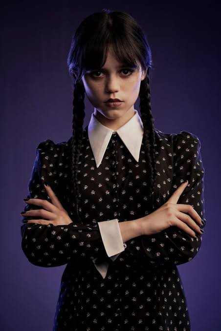

Merlina es inteligente, misteriosa y tiene una personalidad muy particular. Su forma de ver el mundo la convierte en un personaje inolvidable.
Lo extraño es fascinante.

Merlina Addams
Serie: Merlina
Beetlejuice es un personaje extravagante, divertido y sobrenatural. Su apariencia y sus ocurrencias hacen que sus historias sean diferentes y llenas de momentos inesperados.

Beetlejuice
Película: Beetlejuice

Edward Scissorhands
El joven manos de tijera
Edward es un personaje sensible y diferente que intenta encontrar su lugar en el mundo. Aunque su apariencia puede parecer extraña, demuestra que la bondad y los sentimientos son más importantes que las diferencias. Esta historia combina fantasía, emociones y una estética gótica característica del cine de Tim Burton.
El universo de Tim Burton está lleno de personajes únicos, mundos misteriosos y aventuras fantásticas. Cada historia nos demuestra que ser diferente también puede ser extraordinario.

 >
>
Jack Skellington